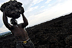
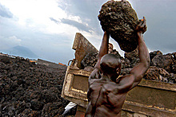
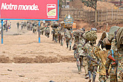
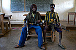
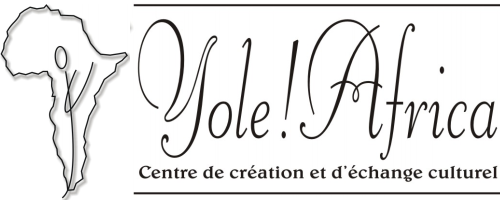

Jaromil's Musings

 printable page
printable page
printable page
printable page
Coltan is an abbreviation for Columbite-Tantalite. A mineral with the unique ability when refined to reduce corrosion and increase heat resistance.

The mineral is valuable for technology industries, its demand exploded in the past 10 years. It is used to produce cell phones, dvd-players, laptop computers and games1 as well in jet engines, ballistic missiles and nuclear reactors.
80% World's known reserves are in Congo (DRC), mostly in the Eastern provinces of Kivus and Orientale, extracted from the ore in a process similar to that of the Californian gold miners of the 1800s.
1. the Play Station 2 production was halted in December 2000 because of coltan shortage
The war in Eastern Congo is mainly driven by economic factors: an outside consumer market hungry for laptops and telephones for which Congo delivers the raw materials.

The conflict has resulted in estimated 4 million deaths, 2 million displaced and 340.000 refugees in neighbouring countries.
30% of East Congolese school children are reported to be working in the coltan mines under inhuman conditions.
This crisis is the worst contemporary humanitarian crisis in the World provoked by Western post-colonialist economies.
In 1998 leaders of Rwanda and Uganda, military trained and equipped by foreign countries, invaded the mineral-rich areas of Congo (DRC).

The invaders installed colonial-style governments supported in arms and training by Western allies, together with a $5 million Citibank loan. Invasion of DRC allowed corporations as American Mineral Fields (AMF) to illegally mine. San Francisco based engineering firm Bechtel Inc. established ties, drawing up an inventory of mineral resources and providing the industry with refined supplies.2
2. Project Censored, 2003 Top 25 stories, "American Companies Exploit the Congo", Philip Beard, Arinze Anoruo, Chris Salvano.
As of today the mineral exploitation is known to involve U.S. based Cabot Corp. and OM Group; Germany's HC Starck and Chinese corporation Nigncxia.3

Payback to Congolese militias is mostly in arms, from dealers as Simax, Lockheed Martin, Halliburton, Northrop Grumman, GE, Boeing and Raytheon. Their action is covert under the face of "humanitarian" organizations as CARE (funded by Lockheed Martin) and International Rescue Committee.4
3. Dollars and Sense, July/August 2001, "The Business of War in the Democratic Republic Of Congo: Who benefits?", by Dena Montague and Frieda Berrigan
4. CovertAction Quarterly, Summer 2000, "U. S. Military and Corporate Recolonization of the Congo", by Ellen Ray
Most international media still portrays the war in East Congo as an ethnic conflict, marginalizing efforts made by local communities to find a solution.

The indigenous Congolese organization Yole!Africa calls everyone to stop using laptops, phones or I-pods on day July 2 to tell the World that many people, most unknowingly, are responsible for this ongoing catastrophe every time they buy a new laptop, phone or I-pod.
The hacker's network dyne.org calls high-tech industries to free products from DRM, Trusted Computing and any other restriction so that everyone in the World is able to appropriate the use of these technologies and build local businesses.
Yole!Afrika is co-producing a documentary about mobile phones and blood directed by Frank Polsen, out this year.
This documentation was made possible thanks to the efforts of Yole!Africa (Democratic Republic of Congo), Baobab Connections (Amsterdam), Project Censored (USA), the dyne.org hackers and a spontaneous human alliance against organized crime, military abuse and corporate exploitation.
Pictures taken by photographer Riccardo Gangale
Thanks go to Petna Ndaliko Katondolo, Yehudi van de Pol, Patrice Riemens, Gnumark and Ecila for their support and precious suggestions.
The "Coltan and Blood" slides are available on the Internet on Jaromil's Journal website, feel free to spread and re-use!
Thanks, a thousand flowers will blossom!

|


|


|
 copyleft 2000 - 2009 dyne.org
foundation and respective authors. Verbatim copying
and distribution is permitted in any medium, provided
this notice is preserved.
Send inquiries & questions to dyne.org's hackers. copyleft 2000 - 2009 dyne.org
foundation and respective authors. Verbatim copying
and distribution is permitted in any medium, provided
this notice is preserved.
Send inquiries & questions to dyne.org's hackers.
|

|